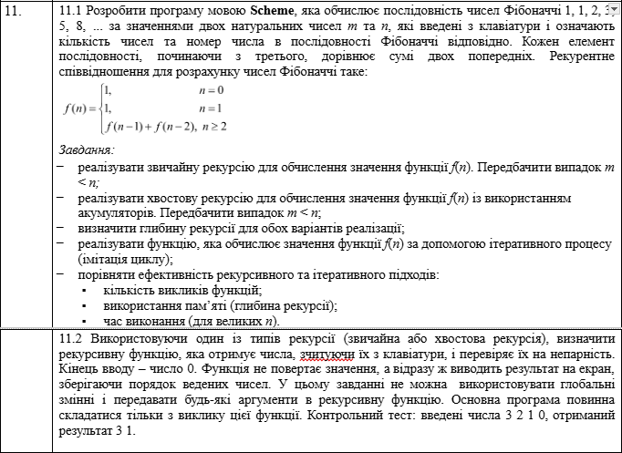
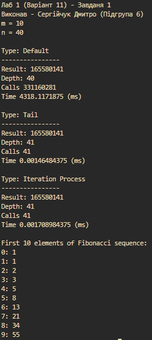
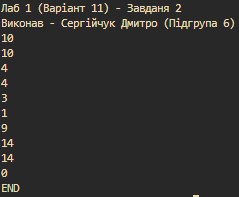
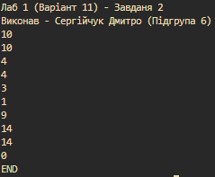
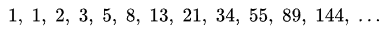

Мета
Сформувати декларативне мислення в галузі програмування завдяки застосуванню принципів функціонального програмування. Опанувати техніку застосування рекурсивних функцій для обчислювальних процесів і здійснити дослідження ефективності рекурсивних процесів.
Умова
Аналіз
Завдання 1
Для знаходження n-ого елемента послідовносі було потрібно реалізувати 3 функції. Хвостова рекурсія та ітеративний процес, по суті, є однаковою функцію, яку можна реалізувати таким чином: створюється додаткова функція-ітератор, яка має два акумулятори (останнє та передостаннє числа), а також індекс поточної ітерації. Дана функція повертає значення a, якщо лічильник ітерацій досяг значення n, інакше виконується повторний виклик даної функції, де аргументу a присвоюється значення суми a та b, а аргументу b передається значення a, лічильник ітерацій збільшується на 1.
Для визначення глибини рекурсії та загальної кількості викликів створюється дві глобальні змінні: depth та call-counter. Значення call-counter збільшується на 1, при кожному виклику функції, а змінна depth - коли було досягнуто нового значення максимальної глибини.
Час визначається через обгортання виклику функції в блоки current-inexact-milliseconds. Пошук глибини рекурсії, кількості викликів та часу зручно визначати у функції-обгортці, яка приймає один з варіантів реалізації функції обчислення n-ого елемента послідовності Фібоначчі.
Для виведення перших m елементів послідовності, зручно реалізувати додаткову фунцію, яка подібна до хвостової, де на кожній ітерації виводиться поточне значення a. Якщо досягнутно m кількості ітерації, то функція завершується.
Завдання 2
Для виконання даного завдання необхідно створити функцію, яка при кожному виклику зчитує з консолі число. Якщо було введено число 0, то функція пише у консоль повідомлення "END", що повідомляє про завершення роботи, інакше функція повторно викликає себе, але перед цим, якщо введене число парне, що визначається через функцію even?, то воно повторно виводиться у консоль.
HIPO Діаграма
Код
Code: Task1
#lang racket
(displayln "Лаб 1 (Варіант 11) - Завданя 1")
(displayln "Виконав - Сергійчук Дмитро (Підгрупа 6)")
(display "m = ")
(define m (read))
(display "n = ")
(define n (read))
(newline)
(define depth 0)
(define call-counter 0)
(define (f-default n current-depth)
(set! call-counter (+ call-counter 1))
(set! current-depth (+ current-depth 1))
(set! depth (max depth current-depth))
(if (< n 2)
1
(+ (f-default (- n 2) current-depth)
(f-default (- n 1) current-depth))))
(define (f-tail n current-depth)
(set! call-counter (+ call-counter 1))
(set! current-depth (+ current-depth 1))
(define (iter a b current)
(set! call-counter (+ call-counter 1))
(set! current-depth (+ current-depth 1))
(set! depth (max depth current-depth))
(if (>= current n)
a
(iter (+ a b) a (+ current 1))))
(iter 1 1 1))
(define (f-iter n current-depth)
(set! call-counter (+ call-counter 1))
(set! current-depth (+ current-depth 1))
(f-iter-func 1 1 1 current-depth))
(define (f-iter-func a b current current-depth)
(set! call-counter (+ call-counter 1))
(set! current-depth (+ current-depth 1))
(set! depth (max depth current-depth))
(if (>= current n)
a
(f-iter-func (+ a b) a (+ current 1) current-depth)))
(define (runner func type)
(set! depth 0)
(set! call-counter 0)
(printf "Type: ~a\n----------------\n" type)
(define start (current-inexact-milliseconds))
(define result (func n 0))
(define end (current-inexact-milliseconds))
(define elapsed (- end start))
(printf "Result: ~a\n" result)
(printf "Depth: ~a\n" depth)
(printf "Calls ~a\n" call-counter)
(printf "Time ~a (ms)\n" elapsed)
(newline))
(runner f-default "Default")
(runner f-tail "Tail")
(runner f-iter "Iteration Process")
(define (print-seq a b current)
(cond
[(< current m)
(begin
(printf "~a: ~a\n" current a)
(print-seq (+ a b) a (+ current 1)))]))
(printf "First ~a elements of Fibonacci sequence:\n" m)
(print-seq 1 0 0)
Code: Task 2
#lang racket
(displayln "Лаб 1 (Варіант 11) - Завданя 2")
(displayln "Виконав - Сергійчук Дмитро (Підгрупа 6)")
(define (f)
(define num (read))
(cond
[(= 0 num) (display "END")]
[(even? num)
(printf "~a\n" num)
(f)]
(else (f))))
(f)
Результати
.png) 

Перевірка
Завдання 1
Для перевірки коректності побудови послідовності візьмемо приклад послідовності зі статті з вікіпедії. Ми можемо побачити, що всі 10 елементів, які було стврено у програмі, відповідають прикладу.
Далі було продемонстровано пошук n-ого елемента послідовності. Змінній n було присвоєно значення 5. В даній реалізації, змінна n позначає індекс елемента в послідовності, тому в даному випадку буде знайдено 6 елемент. Результат пошуку повернув число 8, що відповідає 6 елементу послідовності, що можна перевірити за результатом виведення перших 10 елементів.
Завдання 2
При кожному введені парного числа, програма повторно виводить їх у консоль, як і було вказано в умові. Програма не виконує повторне виведення непарних чисел. При введені 0, програма виводить повідомлення END, що завершує роботу.
Перевірка коду ШІ
Завдання 1
Було використано ChatGPT
✅ Плюси:
- Є чітке розділення між різними реалізаціями обчислення Фібоначчі (звичайна рекурсія, хвостова рекурсія, ітеративний підхід).
- Використовується runner для уніфікованого запуску та замірів — це добре для уникнення дублювання коду
- Є вивід проміжної статистики (глибина, кількість викликів, час).
- Логіка зрозуміла навіть без коментарів.
⚠️ Мінуси (що шкодить clean code):
-
Глобальні змінні
- depth і call-counter змінюються через set! з будь-якого місця. Це робить код менш передбачуваним і важче тестованим.
- Краще повертати їх як результат функції або загортати в структуру (наприклад, (values result depth calls) чи struct).
-
Зайві аргументи
- У f-default, f-tail, f-iter ти передаєш current-depth, але він використовується тільки для обліку викликів, а не для логіки Фібоначчі. Це робить API функцій "засміченим".
- Логіку підрахунків можна винести в обгортку або в окремий модуль.
-
Дублювання коду
- Усі три варіанти повторюють однаковий код для set! call-counter, set! current-depth, set! depth.
-
Непослідовність у стилі
- В одному місці використовується cond, в іншому — if, хоча логіка схожа.
- Місцями є begin, який можна замінити на акуратнішу конструкцію.
-
Назви функцій
- f-default, f-tail, f-iter — зрозуміло, але назви можна зробити більш інформативними, наприклад:
- fib-naive (звичайна рекурсія)
- fib-tail (хвостова рекурсія)
- fib-iter (ітеративна реалізація).
- f-default, f-tail, f-iter — зрозуміло, але назви можна зробити більш інформативними, наприклад:
-
print-seq
- Також використовує рекурсію для простого друку, але вона тут зайва. Логічніше було б використати for або for/fold.
🛠 Як можна покращити
Code
(define (fib-naive n)
(if (< n 2)
1
(+ (fib-naive (- n 1)) (fib-naive (- n 2)))))
(define (fib-tail n)
(define (iter a b i)
(if (>= i n)
a
(iter (+ a b) a (+ i 1))))
(iter 1 1 1))
(define (fib-iter n)
(define (loop a b i)
(if (>= i n)
a
(loop (+ a b) a (+ i 1))))
(loop 1 1 1))
А для підрахунків можна зробити окрему функцію-обгортку:
Code
(define (measure func n)
(define start (current-inexact-milliseconds))
(define result (func n))
(define elapsed (- (current-inexact-milliseconds) start))
(values result elapsed))
👉 Висновок:
Твій код зрозумілий і робочий, але з точки зору clean code він має:
- надмірність (повторення одного і того ж коду для підрахунків),
- глобальний стан (depth, call-counter),
- зайві параметри (current-depth).
Тобто він швидше "академічний" (добрий для експериментів і наочності), ніж "production-ready" clean code.
Завдання 2
Було використано ChatGPT
✅ Плюси:
- Пряма логіка: три випадки (0, парне, інше).
- Менше вкладеності: немає зайвих begin.
- Використання cond по суті: кілька гілок — доречно.
- Рекурсія оформлена акуратно — зрозуміло, що йде повторне читання.
⚠️ Мінуси щодо clean code:
- Назва f: Нічого не каже про призначення. Краще process-numbers або print-evens-until-zero.
- Подвійний виклик f: У гілках (even? num) та else є повторення (f). Це дублювання коду, яке можна винести
- Форматування: У гілці (even? num) команди написані в один блок, але їх можна оформити акуратніше для кращої читабельності.
🛠 Варіант чистіший:
Code
#lang racket
(define (process-numbers)
(define num (read))
(cond
[(zero? num) (displayln "END")]
[else
(when (even? num)
(printf "~a\n" num))
(process-numbers)]))
(process-numbers)
Висновок
В даній роботі було продемонстровано реалізації звичайної рекурсії, хвостої та ітеративного процесу. Відповідно до отриманих результатів було визначено, що для пошуку елементів з послідовності Фібоначчі, хвостова рекурсія та ітеративний процес (який в даному випадку не відрізняється від хвостової рекурсії) виконуються значно швидше, оскільки виконується менше викликів функцій. Глибина рекурсії у звичайній рекурсії менша на 1, та відповідає значення n, що пояснюється тим, що інші методи мають вкладену функцію, що додає один додатковий виклик для функції-обгортки.